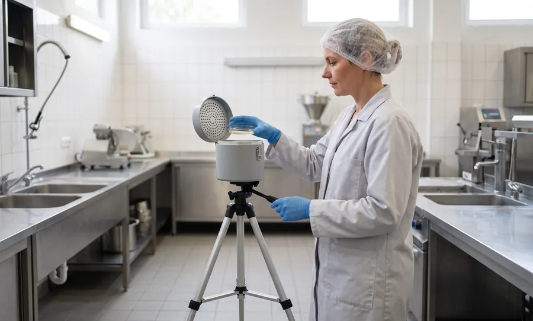

142 вопроса
Проверочный лист для общественного питания — приложение № 2 к приказу Роспотребнадзора от 20.07.2026 № 580, применяется с 5 октября 2026 года.
Проверяем объект так же, как это сделает инспектор Роспотребнадзора: по проверочным листам, обновлённым в октябре 2026 года, и по новым СанПиН. В акте — что нарушено, каким пунктом это установлено и что исправить в первую очередь.
Лицензия на дезинфекционную деятельность № Л064-00111-77/01942445Смывы и пробы воздуха входят в стоимость · Акт через 3 рабочих дня
Санитарный аудит (СЭС-аудит) — добровольная независимая проверка предприятия на соответствие санитарно-эпидемиологическим требованиям: СанПиН и санитарным правилам, техническим регламентам ЕАЭС и проверочным листам Роспотребнадзора. Его проводит не государственный инспектор, а приглашённый специалист, поэтому по итогам аудита не бывает штрафов и предписаний. Результат — акт с перечнем несоответствий, протоколами лабораторных исследований и планом устранения; его получает только заказчик.
| Кому нужен | ресторанам и кафе, магазинам и торговым сетям, пищевым производствам, складам, фармацевтическим производствам, гостиницам |
|---|---|
| Когда заказывают | перед проверкой или профилактическим визитом, при открытии объекта, при переходе на СанПиН 2026 года, перед аудитом торговой сети, после предписания или жалобы |
| Сколько длится | выезд от 2 до 6 часов в зависимости от площади, акт через 3 рабочих дня |
| Что вы получаете | акт аудита, протоколы лабораторных исследований, реестр несоответствий, перечень документов, план устранения |
| Сколько стоит | от 9 000 ₽, смывы и пробы воздуха входят в стоимость — подробнее в блоке «Стоимость» |
| Чем не является | не проверка Роспотребнадзора, не «заключение СЭС» и не покупка готовых журналов |
Обновлено 06.11.2026 · Нормативная база проверена на 06.11.2026 · Автор: Марианна Семерина, санитарный врач
С 1 сентября 2026 года шесть санитарных правил, действовавших с 2021 года, заменены новыми. Новые документы утверждены 2 июня 2026 года и действуют до 1 сентября 2032 года. Программы производственного контроля, инструкции и журналы, где остались ссылки на отменённые документы, нужно актуализировать.
| Сфера | Было до 01.09.2026 | Действует с 01.09.2026 | На что смотрим при аудите |
|---|---|---|---|
| Общественное питание | СанПиН 2.3/2.4.3590-20 | СанПиН 2.3/2.4.4282-26 | производственный контроль на принципах ХАССП (п. 4); документы на продукцию, которую продают вне предприятия (п. 7); на раздаче — не дольше 3 часов для блюд, требующих разогревания, запрет продавать готовые блюда на следующий день и замораживать нереализованные (п. 32); сведения об аллергенах (п. 43); кейтеринг — ярлык с датой и часом изготовления и не более 3 часов в изотермической таре (п. 55) |
| Торговля пищевой продукцией, рынки | СП 2.3.6.3668-20 | СП 2.3.6.4281-26 | раздельное хранение пищевой и непищевой продукции, запрет продажи продукции с истёкшим сроком годности, дополнительный контроль температуры в отделах готовой еды, выпечки и салатов, уборка всех помещений с дезсредствами не реже раза в месяц, медкнижки, отсутствие насекомых и грызунов |
| Эксплуатация помещений, гостиницы и услуги | СП 2.1.3678-20 | СП 2.1.4284-26 | водоснабжение, воздухообмен, освещение, сбор отходов, уборка. Здания, введённые до 01.09.2026, эксплуатируются по своей проектной документации |
| Условия труда | СП 2.2.3670-20 | СП 2.2.4285-26 | микроклимат, освещённость, шум и вибрация на рабочих местах |
Ещё два новых документа — для детских организаций (СП 2.4.2.4283-26) и транспорта (СП 2.5.4286-26) — к отраслям этой страницы не относятся. Продолжают действовать: СанПиН 3.3686-21 (профилактика инфекционных болезней, в том числе дезинфекция, дезинсекция и дератизация) — до 01.09.2027; СанПиН 2.1.3684-21 (содержание территорий, водоснабжение, отходы, эксплуатация производственных и общественных помещений) — до 01.03.2027; ТР ТС 021/2011 «О безопасности пищевой продукции».
142 вопроса
Проверочный лист для общественного питания — приложение № 2 к приказу Роспотребнадзора от 20.07.2026 № 580, применяется с 5 октября 2026 года.
181 вопрос
Лист для торговых объектов и рынков, реализующих пищевую продукцию, — приложение № 1 к тому же приказу.
Шире листа
Плановая проверка не ограничивается вопросами листа — это прямо сказано в п. 2 приказа № 580. Поэтому аудит шире чек-листа.
Гостиницы, непродовольственная торговля, условия труда и другие сферы проверяют по листам приказа Роспотребнадзора от 20.07.2026 № 578 — он применяется с 4 октября 2026 года. Прежний приказ № 808 утратил силу. Каждый вопрос листа ссылается на конкретный пункт нормы, и по этим вопросам мы строим аудит.
Начинаем с проверочного листа вашего вида деятельности и добавляем требования, которые инспектор вправе оценить сверх листа.
Лабораторные исследования входят в аудит. Во время выезда отбираем смывы и пробы воздуха, набор и число проб подбираем под вид объекта и вашу программу производственного контроля. Протоколы прикладываем к акту.

Общественное питание, по данным Центра гигиенического образования населения Роспотребнадзора
Пример формата — строки показывают, как оформлен реестр, это не данные клиента.
| № | Зона | Что обнаружено | Требование | Риск | Что сделать | Срок |
|---|---|---|---|---|---|---|
| 1 | Документы | Программа производственного контроля ссылается на отменённый СанПиН 2.3/2.4.3590-20 | СанПиН 2.3/2.4.4282-26, п. 4 | Средний | Актуализировать программу и процедуры ХАССП | 30 дней |
| 2 | Раздача | Нереализованные готовые блюда замораживают для продажи в другие дни | СанПиН 2.3/2.4.4282-26, п. 32 | Высокий | Прекратить, ввести учёт и списание остатков | Сразу |
| 3 | Меню | Нет сведений об аллергенах в готовых блюдах | СанПиН 2.3/2.4.4282-26, п. 43 | Средний | Дополнить меню и технологические карты | 7 дней |
| 4 | Склад | Ежемесячной оценки численности грызунов нет, журнал не ведётся | СанПиН 3.3686-21, п. 110 | Высокий | Ввести схему точек контроля, журнал и ежемесячную оценку | 7 дней |
| 5 | Договоры | Дератизацию выполняет организация без лицензии | Федеральный закон № 99-ФЗ, ст. 12, ч. 1, п. 59 | Высокий | Сменить исполнителя, проверить лицензию в реестре Роспотребнадзора | Сразу |
| Статья КоАП | За что | Юридические лица | Должностные лица |
|---|---|---|---|
| 6.3, ч. 1 | нарушение санитарного законодательства, невыполнение санитарно-противоэпидемических мероприятий | 10 000–20 000 ₽ или приостановление деятельности до 90 суток | 500–1 000 ₽ |
| 6.4 | нарушение санитарных требований к эксплуатации помещений, зданий и сооружений | 10 000–20 000 ₽ или приостановление до 90 суток | 1 000–2 000 ₽ |
| 6.6 | нарушение санитарных требований к питанию населения в ресторанах, кафе, столовых | 30 000–50 000 ₽ или приостановление до 90 суток | 5 000–10 000 ₽ |
| 14.43, ч. 1 | нарушение требований технических регламентов, в том числе ТР ТС 021/2011 | 100 000–300 000 ₽ | 10 000–20 000 ₽ |
| 14.43, ч. 4 — с 01.09.2026 | продажа маркированного товара с истёкшим сроком годности после запрета из системы мониторинга | 20 000 ₽ за каждую единицу | — |
| 19.5, ч. 1 | невыполнение предписания в срок | 10 000–20 000 ₽ | 1 000–2 000 ₽ или дисквалификация до 3 лет |
Малому и среднему бизнесу штраф за нарушение, впервые выявленное при госконтроле, могут заменить предупреждением — но только если нет вреда и угрозы вреда жизни и здоровью людей (ст. 4.1.1 и ч. 2 ст. 3.4 КоАП). КоАП РФ — по состоянию на 06.11.2026.
До 1 января 2030 года в планы включают только объекты чрезвычайно высокого и высокого риска (п. 11(3) постановления Правительства РФ № 336).
Проводится по категории риска и после уведомления о начале деятельности — не позднее чем через 6 месяцев. Отказаться нельзя, предупреждают не позднее чем за 24 часа. Инспектор вправе осмотреть объект, запросить документы и отобрать пробы. Если нарушения не устранены до конца визита, выдаёт предписание (ст. 52.1 248-ФЗ).
Основания: сведения о вреде или угрозе вреда (в том числе из обращений), индикаторы риска, истёкший срок предписания, работа без уведомления о начале деятельности, уклонение от обязательного профилактического визита (ст. 57 248-ФЗ).
Профилактический визит можно запросить самому (ч. 3 ст. 52 248-ФЗ). Аудит перед ним показывает, что исправить заранее.
Поставщиков торговых сетей проверяют и сами сети по своим требованиям. Санитарный аудит закрывает ту же базу: документы, поточность, ХАССП, пест-контроль.
| Параметр | Санитарный аудит | Проверка Роспотребнадзора | Профилактический визит | Производственный контроль |
|---|---|---|---|---|
| Кто проводит | приглашённый специалист | инспектор | инспектор | само предприятие, лаборатория — по договору |
| Обязателен ли | нет, по вашему заказу | по основаниям 248-ФЗ | обязательный — по ст. 52.1 248-ФЗ, можно запросить самим | да (ст. 11 и 32 52-ФЗ) |
| Что на выходе | акт, протоколы лабораторных исследований, реестр, план устранения | акт; при нарушениях — предписание и протокол | акт визита; при неустранённых нарушениях — предписание | протоколы исследований, журналы |
| Штрафы | нет | возможны | за невыполнение предписания — ст. 19.5 КоАП | — |
| Кто видит результат | только заказчик | надзорный орган | надзорный орган | предприятие; инспектор — при проверке |
ТР ТС 021/2011 обязывает изготовителя разработать и поддерживать процедуры ХАССП (ст. 10). Смотрим поточность, чистые и грязные зоны, выполнение плана лабораторных исследований, пест-контроль в цехах.
Пест-контроль на пищевом производстве →СП 2.3.6.4281-26 и проверочный лист на 181 вопрос: сроки годности, температура хранения, раздельное хранение, уборка. Для сети — каждый объект по одному чек-листу и сводная таблица.
Пест-контроль магазинов и торговых сетей →СанПиН 2.3/2.4.4282-26 и проверочный лист на 142 вопроса: раздача, заготовочные цеха, маркировка инвентаря, аллергены, доставка и кейтеринг.
Пест-контроль ресторанов и кафе →Хранение пищевой продукции по ТР ТС 021/2011, температурный режим, товарное соседство, грызуны и птицы у рамп, условия труда.
Пест-контроль складов и логистики →Санитарная часть: условия труда, режим уборки и дезинфекции, пест-контроль. Аудит по правилам GMP — отдельная процедура, в наш аудит не входит.
Пест-контроль фармацевтических производств →СП 2.1.4284-26 и проверочный лист для гостиничных услуг: уборка номеров и бельё, водоснабжение, вентиляция, клопы и тараканы, пищеблок, если он есть.
Пест-контроль гостиниц и отелей →| Объект | Стоимость |
|---|---|
| Кафе, кофейня, бар без полноценной кухни | от 9 000 ₽ |
| Ресторан, столовая, фабрика-кухня | от 15 000 ₽ |
| Магазин, супермаркет | от 12 000 ₽ |
| Склад | от 15 000 ₽ |
| Гостиница | от 15 000 ₽ |
| Пищевое или фармацевтическое производство | от 20 000 ₽ |
| Сеть объектов | расчёт по количеству и типам объектов |
Что входитвыезд по Москве, работа на объекте, смывы и пробы воздуха, акт с протоколами, реестр, перечень документов, план устранения, разбор с руководителем. Стоимость выезда в Московскую область называем при расчёте.
От чего зависит ценаплощадь, число цехов и зон, количество объектов, срочность.
Зачётесли после аудита вы заключаете договор на пест-контроль, стоимость аудита засчитываем в счёт оплаты обслуживания.
Бесплатнотолько обследование пест-контроля (кнопка «Бесплатный аудит»): точки контроля, журналы, следы вредителей. Санитарный аудит всех разделов — платная услуга.
Рассчитать стоимость аудитаЭто добровольная проверка предприятия на соответствие санитарным нормам, которую проводит независимый специалист до прихода Роспотребнадзора. По итогам вы получаете акт с нарушениями и планом их устранения; штрафов и предписаний аудит не влечёт. Название осталось от санитарно-эпидемиологических станций (СЭС), функции которых сегодня выполняет Роспотребнадзор.
Нет. Обязателен производственный контроль: его проводят сами предприниматели и юридические лица (ст. 11 и 32 Федерального закона № 52-ФЗ). Аудит показывает, как этот контроль работает на деле.
Аудит проводит приглашённый специалист по вашему заказу, проверку — инспектор по основаниям 248-ФЗ. После аудита остаются акт и план устранения, после проверки — акт, а при нарушениях — предписание и протокол. Результаты аудита видит только заказчик.
От 9 000 ₽ за кафе без кухни до 20 000 ₽ и выше за пищевое производство; смывы и пробы воздуха входят в стоимость. Точную сумму называем после короткого разговора о площади и виде деятельности.
Выезд занимает от 2 до 6 часов в зависимости от площади и числа зон, смену при этом не останавливаем. Акт с протоколами лабораторных исследований передаём через 3 рабочих дня.
Программу производственного контроля; договоры на вывоз отходов, дезинфекцию, дезинсекцию и дератизацию, стирку санитарной одежды и лабораторные исследования; личные медицинские книжки; журналы (температура холодильников, бракераж, здоровье персонала, пест-контроль); протоколы лабораторных исследований; документы ХАССП. Если чего-то нет, это тоже результат аудита.
Да, если она ссылается на отменённые СанПиН 2.3/2.4.3590-20, СП 2.3.6.3668-20, СП 2.1.3678-20 или СП 2.2.3670-20. С 1 сентября 2026 года действуют новые правила, и Центр гигиенического образования населения Роспотребнадзора напоминает: «Не забудьте внести изменения в программу производственного контроля».
Нет, и честный подрядчик такого не обещает: решение принимает инспектор, а проверка не ограничивается вопросами проверочного листа. Аудит снижает риск: нарушения, которые вы устранили заранее, инспектор уже не найдёт.
Да. С октября 2026 года действуют новые формы (приказы Роспотребнадзора от 20.07.2026 № 578 и № 580): в листе для общепита 142 вопроса, для торговли пищевой продукцией — 181. Мы проходим лист вашего вида деятельности и добавляем требования, которые инспектор вправе проверить сверх него.
Да, смывы и пробы воздуха входят в стоимость аудита. Во время выезда отбираем смывы с рабочих поверхностей, оборудования, инвентаря и рук персонала и пробы воздуха в помещениях. Протоколы прикладываем к акту и сверяем с планом лабораторных исследований из вашей программы производственного контроля.
Да. Если после аудита вы заключаете с нами договор на пест-контроль, стоимость аудита засчитываем в счёт оплаты обслуживания.
Да. Проверяем объекты по одному чек-листу и сводим результаты в общую таблицу, чтобы были видны нарушения, которые повторяются по всей сети.
Нет. Санитарный аудит проводим для организаций и ИП в Москве и Московской области.
Опишите объект — перезвоним, назовём стоимость и дату выезда.